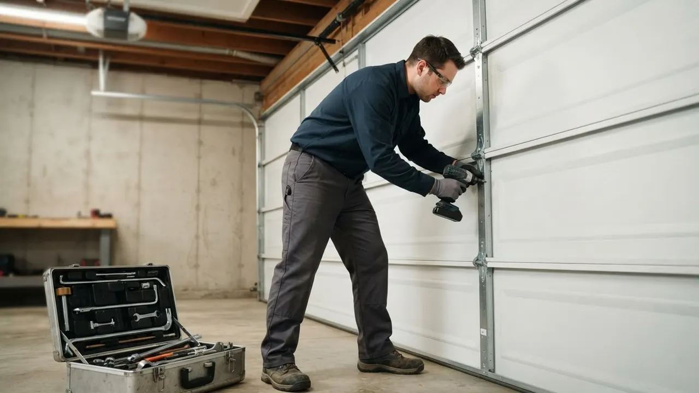

Your local team · Pettinaro
Garage Door Repair in Pettinaro Done Right the First Time
When your garage door quits, you need Garage Door Repair in Pettinaro that shows up fast and fixes it right. We serve Pettinaro North, Pettinaro South, and the Kirkwood Highway corridor with same-day appointments for broken springs, snapped cables, and dead openers. Our trucks carry LiftMaster and Chamberlain parts, so most repairs finish in one visit. Call (302) 556-5080 and we'll get your door moving again today.
Local knowledge
Garage Door Repair in Pettinaro You Can Count On
Garage Door Repair in Pettinaro is a category of work that includes spring replacement, opener service, cable repair, and off-track correction for the attached garages common throughout this part of New Castle County. We've been fixing doors here since 2010, and Pettinaro's mix of newer construction and mature streets means we see everything from stripped opener gears to frozen hinges. Homeowners near Pettinaro Plaza and along Old Capitol Trail call us because we stock the parts their doors actually need. Our techs carry winding bars, C-clamps, and a full socket wrench set on every truck, so we're not making a second trip for a torsion spring or a set of nylon rollers. Whether you need garage door spring repair in Pettinaro or a full opener swap, we handle it in one visit. We also serve the surrounding Wilmington neighborhoods, so if you're just outside the Pettinaro area, we can still get to you quickly.

Services available in Pettinaro
Garage Door Repair Services Available in Pettinaro
We bring the full range of garage door services to Pettinaro, from emergency spring replacement to custom door design. Most of our Pettinaro work is repair-focused: broken torsion springs, snapped cables, and openers that quit mid-cycle. But we also install new doors and smart openers for homeowners upgrading older systems. If you've been searching for garage door repair in Pettinaro near me, we're the local crew that answers the phone and shows up when we say we will.
01
Garage Door Repair
Our core service in Pettinaro is diagnosing and fixing doors that won't open, close, or stay level. We handle broken springs, snapped cables, off-track doors, and opener failures. Most repairs are done in a single visit because our trucks carry common parts for LiftMaster, Chamberlain, and Genie systems. We serve Pettinaro North, Pettinaro South, and the surrounding streets off Kirkwood Highway.
View service 02Garage Door Installation
New door installation in Pettinaro usually means replacing a worn-out builder-grade door with something quieter and better insulated. We measure your opening, recommend Clopay or Amarr models that fit the home's style, and handle the full install. Most jobs take four to six hours. We haul away the old door and make sure the new one balances correctly before we leave.
View service 03Garage Door Opener Repair
Opener problems in Pettinaro often trace back to stripped gears, worn belts, or logic board failures. We diagnose the issue on-site and repair or replace the unit. If your opener is a LiftMaster or Chamberlain, we likely have the parts on the truck. We also fix remotes that won't sync and wall buttons that stopped working.
View service 04Garage Door Opener Installation
Upgrading to a smart opener is one of the most common requests we get in Pettinaro. We install LiftMaster and Chamberlain units with Wi-Fi and battery backup. The job takes two to three hours, including programming your phone and setting up the safety sensors. We test the auto-reverse and make sure the door stops on command.
View service 05Garage Door Spring Repair
Broken torsion springs are our number-one call in Pettinaro. When a spring snaps, the door becomes too heavy to lift safely. We replace both springs at once, use proper winding bars, and check the cables and drums while we're in there. Most spring jobs take 60 to 90 minutes. We use galvanized springs rated for the door's weight.
View service 06Garage Door Cable Repair
Cables fray and snap, especially on doors that see daily use. In Pettinaro, we see cable failures most often on older doors with original galvanized cables. We replace both cables as a pair, inspect the drums for wear, and re-tension the system. If the door came off track when the cable broke, we reset it before we leave.
View serviceBuilt around the city
How We Execute Garage Door Repair in Pettinaro
Every Pettinaro job starts with a full inspection: we check the springs, cables, rollers, hinges, and track before we quote anything. That matters because a door that won't open is often dealing with two problems, not one. We work with UL 325 safety standards and Delaware contractor license requirements, so the repair is code-correct when we're done. If you need 24/7 garage door repair in Pettinaro DE, we answer the phone and dispatch the nearest tech. Most of our Pettinaro work happens in the 19808 and 19804 ZIP codes, and we know the streets around Pettinaro Plaza and Old Capitol Trail well enough to avoid the Kirkwood Highway backups. We carry LiftMaster, Chamberlain, and Genie parts on every truck, along with winding bars, C-clamps, and a full socket wrench set. That means fewer second trips and faster completion.
Delaware winters swing between freezing nights and mild days, which puts extra stress on torsion springs and galvanized cables. We see more spring failures in January and February than any other month. We install springs rated for the door's exact weight and cycle count, and we inspect the cables for corrosion during every winter visit. If a cable shows signs of fraying, we replace it before it snaps.
Many Pettinaro homes were built in the last 25 years with insulated doors and precision tracks. These systems are less forgiving of misalignment, so a small roller issue can cause the door to bind. We use a level and tape measure to check track alignment on every visit. If the door is binding, we adjust the track and replace worn nylon rollers with the correct size.
Pettinaro sits just off Kirkwood Highway, which can back up during rush hour. That can add 10 to 15 minutes to a service call if we don't route around it. We schedule Pettinaro calls with the traffic pattern in mind and use Old Capitol Trail as an alternate route when the highway is jammed. If you have an emergency, call us and we'll dispatch the closest tech.
UL 325 requires garage door openers to have safety reverse and photo-eye sensors. We test both on every repair and replace failed sensors with compliant parts.
Delaware requires garage door contractors to hold a valid license. We carry the required license and can provide proof on request.
This standard covers garage door safety and performance. We follow it when installing or repairing doors, especially when replacing springs or cables.
Common local problems
Common Garage Door Problems in Pettinaro
Broken torsion spring
Snapped cable
Opener motor failure
Door off track
Warning signs
Signs You Need Garage Door Repair in Pettinaro
A door that moves sluggishly is usually fighting a worn spring or a failing opener. The motor is working harder than it should, which shortens its life. If you ignore it, the opener may burn out entirely.
A loud bang often means a torsion spring snapped. The door may still open if the opener is strong enough, but it's dangerous to use. Call us immediately and don't try to lift the door by hand.
This is usually a sensor issue or a track obstruction. Safety sensors can get misaligned by a bump or blocked by debris. We can realign them and test the auto-reverse in under 30 minutes.
Gaps mean the weather stripping has worn out. You'll notice higher energy bills and possibly water in the garage. Replacing the bottom seal and perimeter stripping solves the problem.
Intermittent remote issues often point to a failing opener logic board or a weak battery. We can diagnose the opener and reprogram or replace the remote. Sometimes a simple battery swap fixes it.
Pricing and expectations
Garage Door Repair Pricing in Pettinaro
Garage door repair pricing in Pettinaro depends on the job. A standard spring replacement typically runs $250 to $450, including parts and labor. Opener repairs range from $150 to $350, while a new opener install runs $350 to $650. Cable replacements usually cost $150 to $300. We provide a written estimate before we start, and we don't charge a trip fee for standard service calls. If you need emergency service after hours, there's a modest after-hours fee. We accept all major credit cards and can bill some insurance claims directly.
Spring replacements cost more than roller swaps because the parts are heavier and the job requires more labor. A broken torsion spring is a bigger job than a noisy roller.
If your door uses a common size spring or a standard LiftMaster opener, we likely have the parts on the truck. Rare or discontinued parts may need to be ordered, which adds a day or two.
Standard business hours are the most affordable. Nights, weekends, and holidays carry an after-hours rate. We'll tell you the difference before we dispatch.
We know the route
Navigating Pettinaro: Landmarks We Use
Pettinaro is a compact area, but knowing the landmarks helps us route faster. We use Pettinaro Plaza and the Kirkwood Highway corridor as our main reference points. If you're near Delaware Park or along Old Capitol Trail, we can find you without a problem. When you call, give us the nearest landmark and we'll dispatch the closest tech.
Pettinaro Plaza
Pettinaro Plaza is a commercial center on Kirkwood Highway. We use it as a reference point for calls in the surrounding residential streets. If you're near the plaza, we can usually reach you in 15 minutes.
Kirkwood Highway
Kirkwood Highway is the main artery through this part of New Castle County. We use it to route to Pettinaro calls, but we switch to Old Capitol Trail when traffic backs up.
Delaware Park
Delaware Park is a well-known landmark just east of Pettinaro. We use it to orient calls coming from the Wilmington side. If you're near the park, you're only a few minutes from our service area.
Pettinaro Plaza
Pettinaro Plaza is a retail and service center on Kirkwood Highway. It includes shops, restaurants, and professional offices. We service commercial doors in the plaza and nearby business properties.
Kirkwood Highway Corridor
The Kirkwood Highway corridor is a busy commercial strip with retail stores, auto shops, and offices. Several properties here have loading doors and storefront systems that we maintain.
Kirkwood Highway (DE-2)
Kirkwood Highway runs directly through the Pettinaro area, giving us quick access from Wilmington and the surrounding suburbs. It's our primary route for most calls.
Pettinaro service coverage
Pettinaro Neighborhoods We Serve
We cover every street in Pettinaro, from the newer sections off Pettinaro Drive to the older homes near Old Capitol Trail. Most of our calls come from Pettinaro North and Pettinaro South, but we also serve the surrounding blocks in the 19808 and 19804 ZIP codes. If you're not sure whether we reach your street, call (302) 556-5080 and we'll confirm.
Pettinaro NorthPettinaro SouthPettinaro DriveOld Capitol Trail Area
Delaware Express Garage Door Service3601 Old Capitol Trl A5, Wilmington, DE 19808, United States, Wilmington, Delaware
Local results
Recent Garage Door Repair Jobs in Pettinaro
A homeowner in Pettinaro North called after their door stopped opening. The opener motor ran, but the door didn't move. We found a stripped gear and a worn belt.
We replaced the gear and sprocket assembly and installed a new belt. We also lubricated the chain and checked the safety sensors. The whole job took about 90 minutes. The door was running smoothly the same day. The homeowner said it was quieter than it had been in years.
A Pettinaro South resident heard a loud bang from the garage. The torsion spring had snapped, leaving the door stuck open. They needed emergency service.
We arrived within two hours, replaced both torsion springs with galvanized units rated for the door's weight, and checked the cables and drums for damage. We also balanced the door and tested the opener. The door was back in service the same evening. The homeowner avoided a night with the garage open.
A customer on Old Capitol Trail had a door that was off track and wouldn't close. The bottom panel was dented from a car bumper, and the track was bent.
We reset the door on the track, straightened the bent section, and replaced the damaged bottom panel with a matching Clopay panel. We also replaced two worn rollers. The door closed flush and ran quietly. The repair cost less than a full door replacement.
Notes from local customers
What Pettinaro Customers Say
Our garage door spring snapped on a Friday morning. I called Delaware Express and they had a tech out by early afternoon. He replaced both springs, checked the cables, and had us running in about an hour. Fair price, no upsell. I'll use them again.
The opener on our 15-year-old door finally died. They installed a new LiftMaster belt-drive unit and programmed it to my phone. The tech was patient and explained how to use the app. The door is so much quieter now. Highly recommend for anyone in Pettinaro.
I had a dented bottom panel and a bent track from backing into the door. They fixed both in one visit and matched the panel color perfectly. You can't tell there was ever damage. The tech also adjusted the sensors while he was there. Good work.
Plan for the season
How Seasons Affect Garage Door Repair in Pettinaro
Schedule a tune-up in April or May. We'll lubricate the moving parts, check the balance, and catch small issues before they become big ones.
Keep your tracks clean and lubricated. If you notice your door sticking, call us before the problem gets worse.
Clear debris from your tracks and check your weather stripping. If it's cracked or worn, replace it before the first freeze.
Keep your garage door lubricated with a cold-weather lubricant. If you hear a loud bang, call us immediately. Don't try to lift the door by hand.
Nearby service areas
Nearby Cities We Serve from Pettinaro
Pettinaro sits in a part of New Castle County where we can reach several Wilmington neighborhoods quickly. We serve Downtown Wilmington, Riverfront, The Highlands, Trolley Square, Forty Acres, and Baynard Village, among others. If you're just outside Pettinaro, call us and we'll confirm coverage.
Before you hire
What to Ask Before Hiring a Garage Door Repair in Pettinaro
Are you licensed and insured in Delaware?
Do you carry the parts on your truck?
Will you replace both springs or just the broken one?
Do you test the safety reverse after the repair?
What kind of warranty do you offer on parts and labor?
Trust and compliance
Trust and Compliance
Delaware contractor license
DASMA certification
Door and Access Systems Manufacturers Association
IDEA certification
Institute of Door Dealer Education and Accreditation
New Castle County Chamber of Commerce
member
Better Business Bureau
accredited business
Most repairs run $150 to $450, depending on the job. A standard spring replacement costs $250 to $450. Opener repairs run $150 to $350. Cable replacements are $150 to $300. We provide a written estimate before we start, and there's no trip fee for standard service calls.
We've been serving Pettinaro since 2010, and we have a 4.9-star average from local customers. We're licensed, insured, and we carry common parts on every truck. But don't take our word for it. Ask your neighbors who they use, and check our reviews. We're confident you'll like what you find.
Yes. We offer 24/7 emergency service for Pettinaro and the surrounding New Castle County area. If your door won't close, a spring snapped, or your car is trapped, call (302) 556-5080. We'll dispatch the nearest tech, even on nights and weekends.
Yes, same-day service is available for most Pettinaro calls if you book before noon. We keep common parts on the truck, so we can often complete the repair in one visit. Call us and we'll give you a realistic arrival window.
We repair and replace all major opener brands, including LiftMaster, Chamberlain, Genie, Craftsman, and Linear. Whether your remote stopped working or the motor burned out, we can diagnose it on-site. Most opener repairs take under two hours.
Your next step is waiting
Get Garage Door Repair in Pettinaro Today
If your garage door is stuck, noisy, or just not working the way it should, call us. We've been serving Pettinaro since 2010, and we're licensed, insured, and ready to help. Same-day service is available for most calls. Call (302) 556-5080 and we'll get your door back on track.
Start with the basics
Call For Garage Door Service
Call (302) 556-5080 and tell us what your door is doing. We answer during business hours and run emergency calls after hours. Most days we can get a tech to you the same day, and we will give you a window, not a maybe.